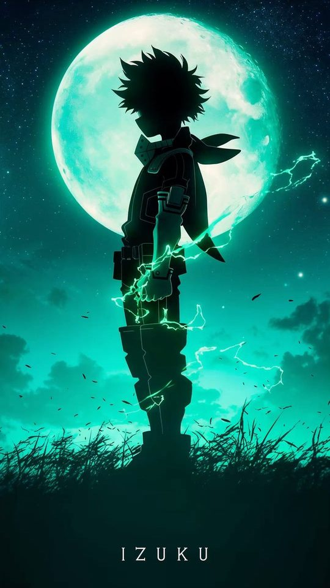
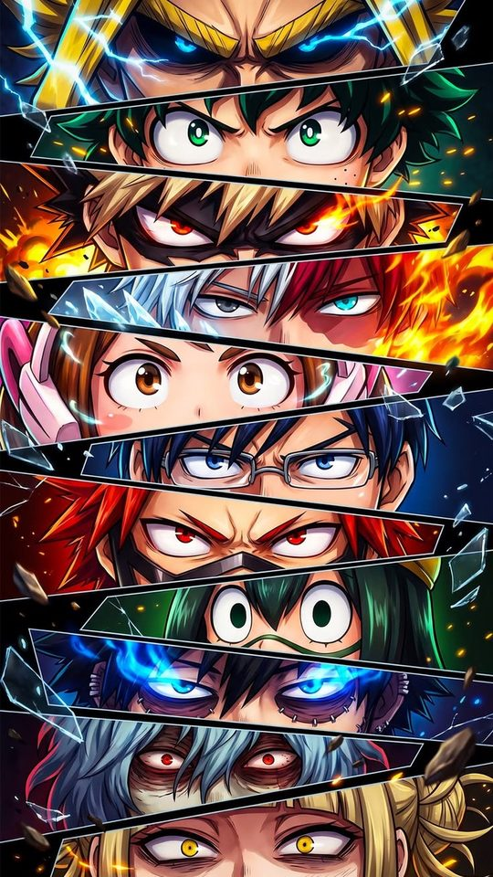
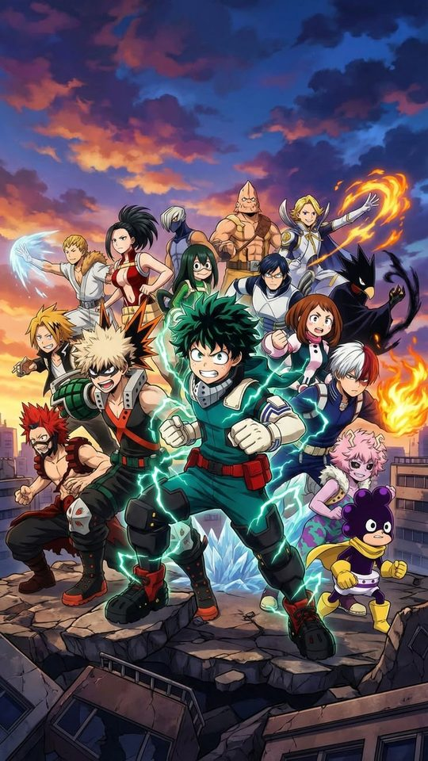
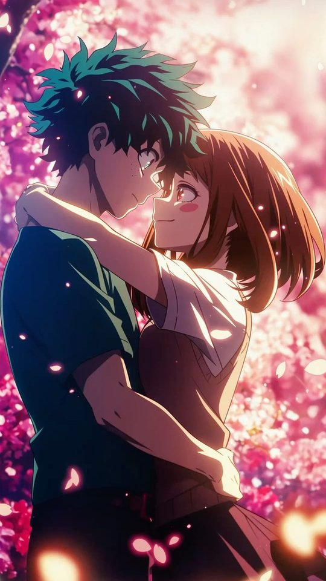

My Hero Academia Wallpapers: From Deku to All Might

My Hero Academia is one of the boldest-looking anime on television, and that boldness is exactly what makes it work as a phone wallpaper. This guide looks at how Deku's design changes from arc to arc, then works through Bakugo, Todoroki, All Might and Shigaraki, with notes on how their primary-colour palettes behave as a lock screen. You will finish with a clear sense of which characters give you a clean, readable background and which ones are better saved for a busy home screen.
What makes My Hero Academia art so bold
The series leans hard on primary colours and heavy outlines. Characters are built from a small number of strong hues, red, blue, yellow, orange and green, and the shading is deliberately graphic rather than realistic. Costumes are blocky and symmetrical, which gives each character a silhouette you can recognise from across a room. That combination is close to ideal for a phone wallpaper, because a strong silhouette and a simple palette survive being scaled down and partly covered by icons.
The trade-off is that MHA art is loud. A frame full of explosions and energy effects is exciting on a poster but exhausting behind a clock and a dozen app icons. The best MHA wallpapers tend to be the calmer ones: a single character, a clean costume, and a colour that does not compete with the rest of the screen.

Deku: a design that changes every arc
Deku is the character whose look evolves the most, and each version gives you a different wallpaper. In the first season he wears a simple green jumpsuit with a white and red detail and a mask, a bright, cheerful palette that reads clearly on a light home screen. As the sports festival and later arcs arrive, the costume gains armour, a hood and more grey and black, and the palette shifts cooler and more serious.
By the time Deku is wrestling with multiple quirks, his design is darker again, with black tendrils of energy and a harder, more angular silhouette. In the final stretch of the story he takes on a white-and-green armoured look with a metallic finish, which is the brightest and most graphic of all his designs. For a phone, his early green suit is the most readable, while the later, darker versions work best on a dark theme where the green accents glow.

Bakugo: orange and black, pure energy
Bakugo is the loudest design in the show, and he owns it. Spiky blond hair, sharp red eyes, and a black-and-orange hero costume with grenade-shaped gauntlets make for a palette of black, orange and pale yellow that is genuinely striking. His explosions add white and yellow flashes that give his images real punch.
On a phone, Bakugo works best when the explosion effects are contained. A close portrait with the grenade gauntlets in frame gives you the orange against black that makes him distinctive, without the whole screen turning into a firework. On a dark theme, the orange accents are almost luminous, which makes him one of the best choices for a bold lock screen.
Todoroki: a design built on a split
Todoroki is the most naturally wallpaper-friendly character in the series, because his design is symmetrical by definition. His hair is white on the right and red on the left, matching his heterochromia, and his quirk splits into ice on one side and fire on the other. That left-right division gives you a wallpaper that is balanced and clean almost no matter how you crop it.
His palette is also easy to work with: white, red, pale blue ice and warm orange flame. A portrait crop centred on his face keeps both halves of the split visible and gives the screen a natural focal point. Because his colours include both a cool and a warm tone, he sits comfortably on either a light or a dark theme, which is rare among the main cast.

All Might: the symbol, in two forms
All Might gives you two very different wallpapers in one character. In his muscular hero form he is a wall of red, white, blue and gold, with a broad grin and a body built from sharp, blocky shapes. That version is bold, high-contrast and instantly recognisable, and it makes a strong lock screen if you want something that feels heroic and uncluttered. His colours are close to a classic flag palette, which means they are familiar and easy to read at any size.
His deflated, true form is the opposite: a thin, gaunt figure with hollow cheeks and heavy shadowing, usually drawn in muted greys and blacks with a single thread of light. It is a quieter, more melancholy image that suits a dark theme and a low-key lock screen. Choosing between the two is really choosing between the symbol and the man, and both crop cleanly to portrait.

Shigaraki: decay and the dark theme
Shigaraki is the best fit for anyone who wants a dark wallpaper. Pale blue-grey hair, red eyes, a black outfit and the severed hands that define his early design give him a cold, high-contrast palette. Later in the story his appearance changes dramatically, and his decayed, awakened form uses deep reds, blacks and cracked skin, which makes for an even darker and more textured image.
For a phone, Shigaraki's images work best on a black or near-black background, where his pale hair and red eyes become the only bright points. That restraint keeps the screen readable while still feeling dramatic. Just be careful with early designs that include a lot of scattered hands, which can look cluttered once a widget sits on top of them.
Bold primary colours on a lock screen
- Match the wallpaper's dominant colour to your icon tint where possible. MHA's primaries, especially Deku's green and Bakugo's orange, look deliberate when the interface agrees with them.
- Keep the face and the brightest colour in the upper half of the screen, away from the clock if your clock sits low.
- Prefer contained effects over full-frame explosions. A single spark of orange or a strip of ice reads better than a screen full of energy lines.
- Todoroki and All Might are the safest picks for a first wallpaper, because their palettes are balanced and their silhouettes are symmetrical.
- On a dark theme, Bakugo and Shigaraki glow; on a light theme, early Deku and All Might read best.
Frequently asked questions
Which My Hero Academia character makes the best wallpaper?
Todoroki is the easiest to live with, because his white-and-red split is symmetrical and his palette includes both warm and cool tones, so he works on light and dark themes alike. All Might in his muscular form is the most instantly recognisable, while Bakugo and Shigaraki are the strongest choices for a bold or dark lock screen.
Which version of Deku should I use?
His early green jumpsuit is the brightest and most readable, so it suits a light home screen. His later, darker designs with multiple quirks and black energy work better on a dark theme, and his white-and-green final costume is the most graphic and graphic-friendly of all.
Why do some My Hero Academia wallpapers feel too busy?
The series loves big energy effects and explosions, and a frame full of those fills the whole screen, leaving nowhere clean for a clock or a widget. Cropping tighter on the character, or choosing a calmer portrait, usually solves it.
Are bright primary colours a problem for a lock screen?
Not if you keep them contained. A single strong colour behind a character reads well, but three or four competing bright hues can make the clock hard to see. Keep one dominant colour and let the rest of the image stay simple.
Related reading
If you like fantasy anime with real political weight, we reviewed As a Reincarnated Aristocrat, I'll Use My Appraisal Skill to Rise in the World season by season: Season 1, Season 2, Season 3 (airing now), or start with the complete S1-S3 guide.